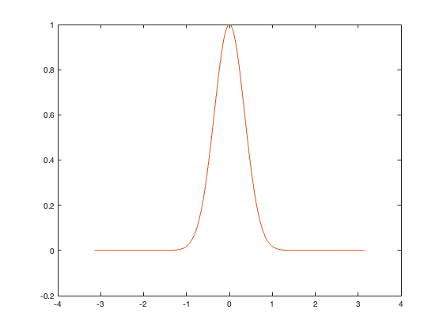
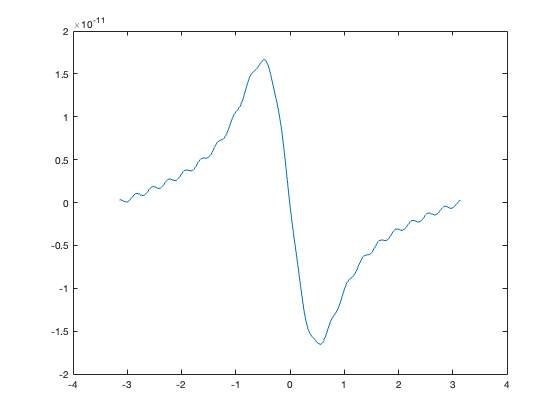

m = 10^5;
n = 20;
f = @(x) exp(-4*x.^2);
h = pi/m;
x_grid = (-pi + h*(0:2*m-1))';
y = f(x_grid);
c = my_fourierseries(y);
phi_eval = real( fourierseries_eval(c,n,x_grid) );
figure(1);clf;plot(x_grid,phi_eval);hold on;plot(x_grid,y);
figure(2);clf;plot(x_grid,phi_eval - y);
function c = my_fourierseries(y)
ytilde = fft(y);
m = length(y)/2;
d = (0:2*m-1)';
d = (1i).*pi.*d;
d = (1/(2*m)).*exp(d);
ctilde = d.*ytilde;
c = cat(1, ctilde(m+1:2*m), ctilde(1:m));
return;
end
function phi_eval = fourierseries_eval(c,n,x_eval)
phi_eval = zeros(length(x_eval), 1);
m = length(c)/2;
for k=-n:n
phi_eval = phi_eval + c(1+m+k).*exp((1i).*k.*x_eval);
end
return;
end
 